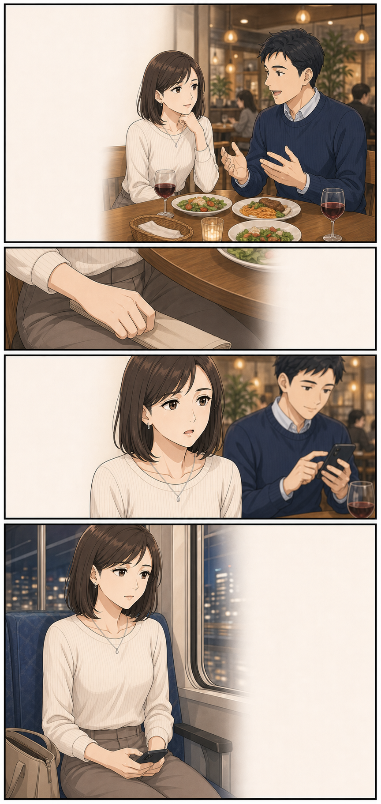
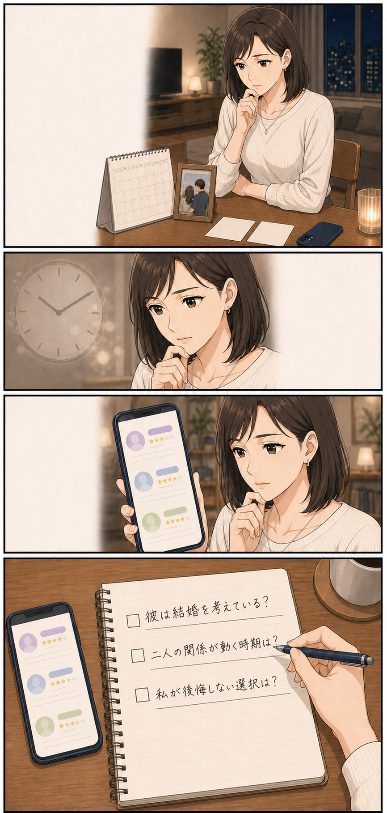
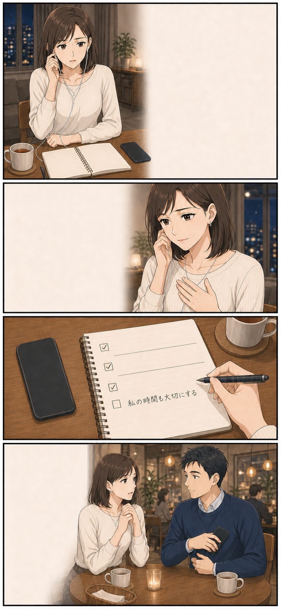

こんなあなたへ
彼を待ちたい。
でも、私の時間も大切。
好きだから、別れたいわけではない。でも、将来の話を避けたまま時間だけが過ぎていくのは怖い。そんなあなたにこそ、見てほしいお話です。
あなたが知りたいのは、どんなことですか？
- 1彼は結婚や二人の将来をどう考えているのか
- 2二人の関係が動く可能性やタイミング
- 3待つ・話す・次へ進む、自分が後悔しない選択
この人を信じて、
あと何年待てばいい？
結婚や相手の気持ちを相談する場面を想定したイメージストーリーです。
友人来年、結婚することに
なったの
本当におめでとう！
心からうれしい。
なのに、少しだけ
胸がざわついた。
私たちは、付き合って3年。
彼は二人の未来を
考えているのかな。

彼今のプロジェクト、
しばらく忙しく
なりそうでさ
今日こそ、将来の話を
するつもりだった。
あのね……
好きだから待ちたい。
でも、私の時間も
大切にしたい。

待つ？ 離れる？
どちらも今すぐには
選べない。
考えるほど、
時間だけが過ぎていく。
結婚や相手の気持ちに
詳しい先生もいるんだ

今日は15分だけ。
聞きたいことは
3つです
先生彼の気持ちだけでなく、
あなたが望む未来も
一緒に見てみましょう
私との将来を、
どう考えている？
答えを決めてもらうのではなく、
自分が望む未来を整理する。
PHONE CONSULTATION
みんなの電話占い
身近な人には話しにくい恋愛の悩みを、電話で個別に相談できます。結婚・相手の気持ちから探せる
先生ごとの得意分野を確認。
相談前に比較できる
プロフィール・口コミ・1分料金を掲載。
アプリ通話料は無料
鑑定料金は別途、1分ごとに発生。
PRICE
費用は、ここだけ確認
- 初回特典には条件・上限・期限があります。
- アプリ通話料は無料。通常回線は別途通話料がかかる場合があります。
- 最新条件は公式サイトで確認してください。
HOW TO USE
使い方は3ステップ
- 1
無料会員登録
登録だけなら料金はかかりません。
- 2
先生を選ぶ
得意分野・口コミ・1分料金を比較。
- 3
時間を決めて相談
「15分まで」と伝え、利用時間分を支払います。
FAQ
気になることだけ確認
登録だけでも料金はかかる？
会員登録は無料。鑑定を利用した場合に料金が発生します。
鑑定・通話料金はいくら？
鑑定は1分ごとで先生により異なります。アプリ通話料は無料です。
先生はどう選ぶ？
結婚や相手の気持ちの相談実績、口コミ、話し方、1分料金を比較します。
相談内容を周囲に知られない？
個人情報の扱いは、公式サイトの方針を確認してください。
結果は必ず当たる？
結果を保証するものではありません。判断材料の一つとして利用します。
長くなりそうで心配
聞きたいことを絞り、最初に「15分まで」と伝えましょう。途中終了もできます。
待つか、話すか。
今日決めなくても大丈夫です。